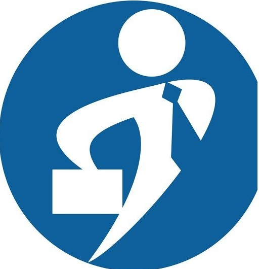
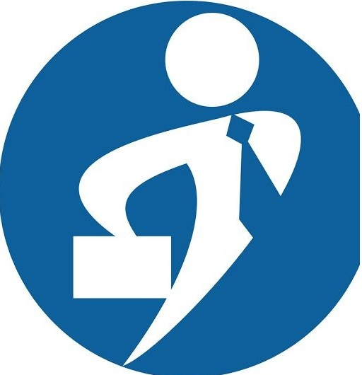

Success Stories

Career Management transformed my job search! Within weeks, I secured a role at a top company. Their guidance and resume optimization made all the difference!
- Emily Carter, Product Manager

I struggled to find the right tech job until I used Career Management. Their expertise connected me with recruiters, and now I work at a leading tech firm!
- Raj Patel, Data Engineer

The career coaching helped me gain confidence. I landed my dream job in finance, and I couldn’t be happier!
- Sofia Martinez, Financial Advisor

I applied through Career Management and got interview calls within days. Their professional approach is top-notch!
- Kwame Osei, UX Designer

Thanks to Career Management, I secured a leadership role. Their expert advice and personalized support gave me the edge I needed!
- Naomi Williams, Operations Director

They helped me refine my CV and provided interview tips. I now work at an amazing company!
 
